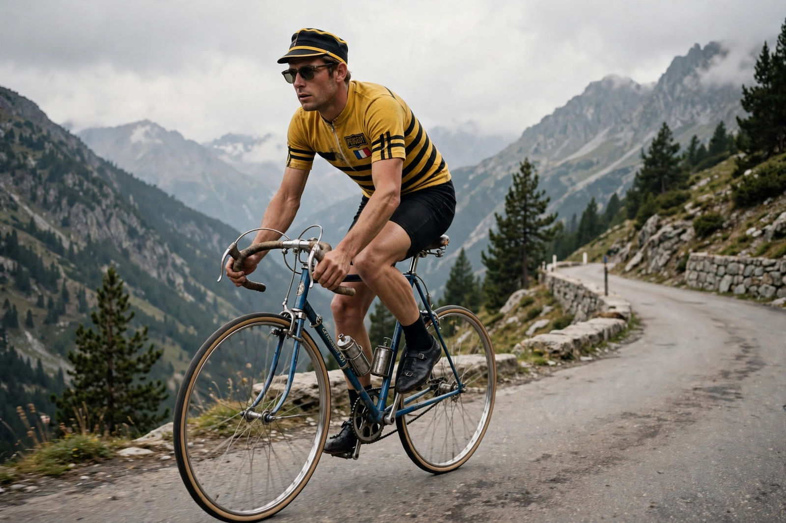

Thomas Simpson (30 November 1937 – 13 July 1967) was one of Britain's most successful professional cyclists. He won the world road race championship in 1965, three of cycling's five Monuments — Milan–San Remo (1964), the Tour of Flanders (1961) and the Giro di Lombardia (1965) — and was the first British rider to wear the yellow jersey in the Tour de France. He died of heart failure during the 1967 Tour de France on the ascent of Mont Ventoux, with amphetamines and alcohol found in his system; his death was a watershed in the sport's confrontation with doping.

| Tom Simpson | |
|---|---|
| Born | 30 November 1937, Haswell, County Durham, England |
| Died | 13 July 1967 (aged 29), Mont Ventoux, France |
| Nationality | British |
| Discipline | Road and track |
| Major wins | World Road Race Championship (1965); Tour of Flanders (1961); Milan–San Remo (1964); Giro di Lombardia (1965); Paris–Nice (1967) |
Born in County Durham and raised in Harworth, Nottinghamshire, Simpson took up cycling with the Harworth club, moved to France in 1959 to pursue a professional career, and quickly established himself at the highest level, winning the Tour of Flanders in 1961. He rode for teams including Peugeot and briefly led overall at the 1962 Tour de France, finishing sixth in Paris. A bold, attacking rider, he became a star in an era when British cyclists rarely succeeded on the Continent. On the track he won a bronze medal in the team pursuit at the 1956 Melbourne Olympics and silver at the 1958 Commonwealth Games.
At the 1965 World Championships in Lasarte, Spain, Simpson attacked late with his rival Rudi Altig and beat the German in the sprint to become Britain's first world professional road champion, earning the rainbow jersey. The same year he won the Giro di Lombardia and was voted BBC Sports Personality of the Year — the only cyclist to win the award until decades later.
Simpson began the 1967 Tour de France hoping for a high finish, despite illness. On stage 13, 13 July 1967, in extreme heat on the barren slopes of Mont Ventoux, he began weaving across the road about two kilometres from the summit, fell, and — famously insisting "put me back on my bike" — remounted with help before collapsing again a few hundred metres later. He could not be revived. The post-mortem found amphetamines and alcohol in his body; the official cause of death was heart failure, compounded by heat exhaustion, dehydration and the drugs. Tubes of amphetamines were found in his jersey pocket.
A granite memorial marks the spot where Simpson fell, a place of pilgrimage for cyclists, who traditionally leave a water bottle or cap in tribute. His death pushed the sport toward formal anti-doping controls: drug testing at the Tour was strengthened and the International Olympic Committee established its medical commission the same year. A museum dedicated to Simpson opened in Harworth in 2021.
Tour de France · Mont Ventoux · Doping in sport · 1967 Tour de France
From Wikipedia, the free encyclopedia.